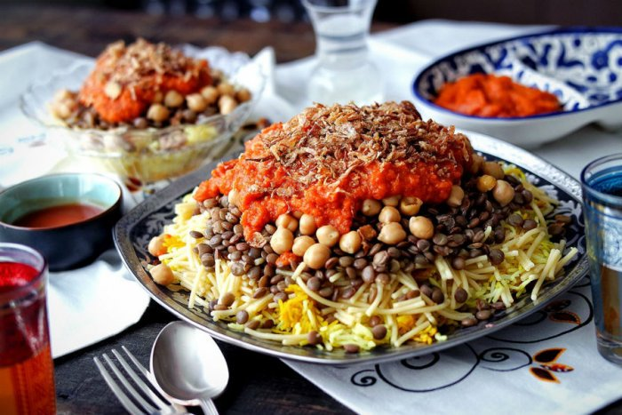

Home Koushari

Description
Egypt's national dish and a widely popular street food.A traditional Egyptian staple, mixing pasta,
rice and brown
lentils, and topped with a zesty tomato sauce, garlic vinegar and garnished with chickpeas and crispy fried
onions. It is often served with sprinklings of garlic juice; garlic vinegar and hot sauce are optional.
Recipe Video Ingredients
1200g (42 oz) Chopped tomatoes
250g (8.5 oz) Brown Lentils
250g (9 oz) Ditalini Pasta
225g (8 oz) Dried ChickPeas
175g (6 oz) Medium Grain Rice
175g (6 oz) Vermicelli
8 Onions
2 Heads of Garlic
1 Tomato
1 Lemon
10 Tbsp White Vinegar
6 1/2 Tsp Salt
6 tsp Ground Cumin
1 1/2 Tsp Black Pepper
1 Tsp Cayenne Pepper
1 Tsp Ground Coriander
Instructions
To make the chickpeas
Soak your dried chickpeas overnight in a large amount of water
The next day drain your chickpeas and in a large pot boil a large amount of water and add the soaked
chickpeas
Add a plum tomato, an onion sliced in half and 2 cloves of garlic to the pot
Add 1 Tsp Cumin, 1 Tsp Salt and 1/2 Tsp Cayenne to the pot and leave to boil for 1-2 hours
To make the Lentils
Add 2 litres or quarts of water to a pot and boil
Add 1 Tsp Salt and 1 Tsp Cumin to the water as well as your lentils
Boil for 30-60 minutes until cooked through but not mushy (aldente)
Strain the lentils using a colander, and keep any lentil water for later
To make the Tomato sauce
Add 4 Tbsp of Oil to a sauce pan on medium high heat
Mince 10 garlic cloves and fry in the pot for a few minutes until fragrant and bubbly
Before the garlic browns add 4 Tbsp of White vinegar and deglaze the pot
Add 800g of Crushed Tomatoes or Tomato Passata
Season with 1 Tsp salt and 1/4 Tsp Pepper
Allow to simmer for 20-30 minutes until thickened
To make the Spicy Tomato sauce
Slice a green chilli into thin circles
Add 4 Tbsp of Oil to a sauce pan on medium high heat
Mince 5 Garlic cloves and fry in the pot with the chillis for a few minutes until fragrant
Add 2 Tbsp of white vinegar and deglaze the pot
Add 400g of chopped tomatoes and simmer for 20 minutes until thick and chunky
To make the Dakkah, Garlic Vinegar sauce
Mince 7 garlic cloves and add to a jug
Add 1/3C White Vinegar, 1/3C water and 1/4C Lemon juice
Add 2 Tsp Cumin, 1 Tsp Coriander, 1/2 Tsp Cayenne pepper and 1/2 Tsp salt and mix to combine
To make the crispy onions
Slice your onions into thin strips against the grain of the onion
Place in a large bowl and add 2 Tsp Cumin, 1 Tsp Black pepper and 2 Tsp salt
Mix thoroughly until all the onion strips have been separated from each other and let sit for 30-60 minutes
Add frying oil to a large pot about 1.5cm or 1/2in deep, when hot add the onion in batches
Fry for 8-12 minutes per batch until Golden in colour, remove and place on a paper towel lined tray, they
will continue
to darken after removing
After a few minutes on the tray, move to a second tray with clean paper towels so they do not reabsorb any
oil
Fry all the onions except a handful
To make the koshari base
Wash your rice till the water runs clear and allow to dry for at least one hour
Remove all of the oil from the pot you fried the onions in, except 1/4C
Fry the handful of onions that you kept aside till lightly browned
Add in the vermicelli and fry on high heat for 2-3 minutes until golden brown
Add the dried rice to the vermicelli
Add a few large Tbsp of the regular tomato sauce to the pot
Add 3-4 Tbsp of Dakkah to the pot, mix well
Add the lentil water to the pot, and top up with water until the rice and vermicelli are just barely covered
Bring the pot to a boil and cover, once water has evaporated from the pot turn the heat down to low
Allow to steam for 20-30 minutes
Cook pasta in heavily salted water till Al dente
Add the cooked pasta to the rice and vermicelli in two parts and mix till evenly combined
To make the Koshari
Add a generous serving of the koshari base to a platter
Spoon over the tomato sauce across the koshari base
Add a few Tbsp of the Dakkah over the top of the tomato
Sprinkle some of the cooked chickpeas over the top of the dish
Add fried onions to the dish
Serve the chilli sauce on the side and Enjoy